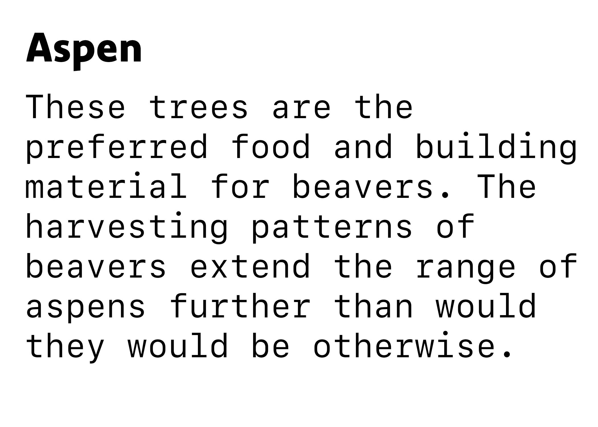
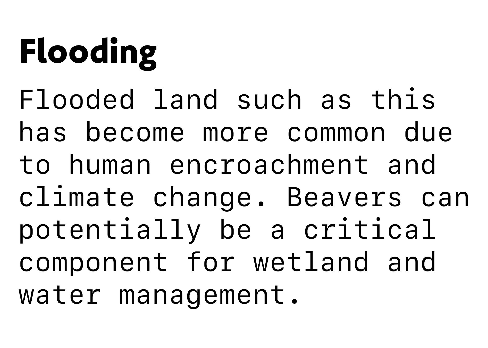
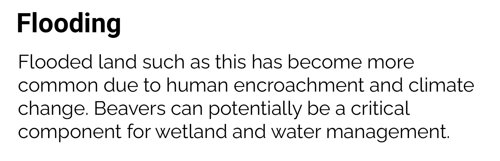
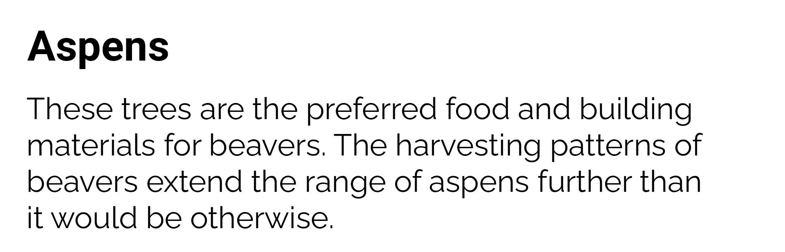
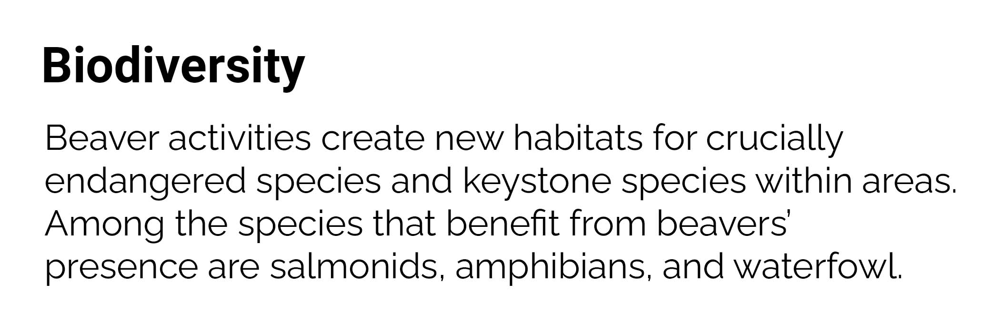
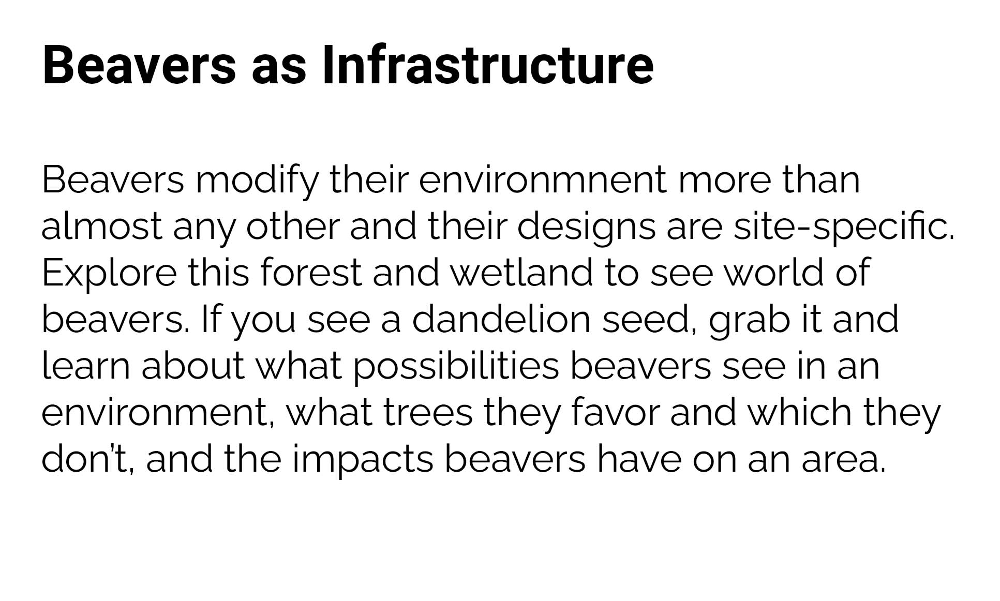
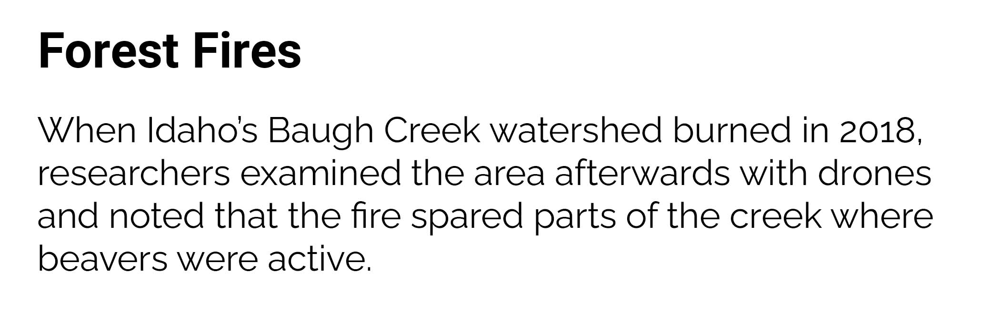
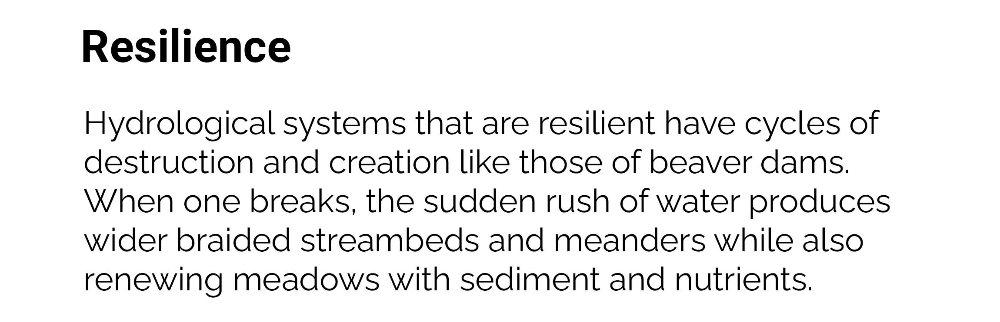
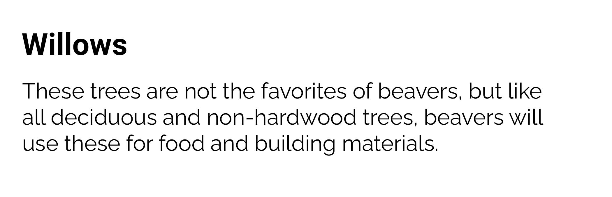

<!doctype html>
<!doctype html>
<html>
    <title>Beavers as Infrastructure</title>
    <script src="https://aframe.io/releases/1.2.0/aframe.min.js"></script>
    <script src="https://unpkg.com/aframe-environment-component/dist/aframe-environment-component.min.js"></script>
    <script src="https://unpkg.com/aframe-event-set-component@3.0.3/dist/aframe-event-set-component.min.js"></script>
    <script src="https://unpkg.com/super-hands@2.1.0/dist/super-hands.min.js"></script>
     <script src="aframe_gui/examples/js/aframe-gui.js"></script>
     <script src="aframe_gui/examples/js/gui-env.js"></script>
     <script>
            AFRAME.registerComponent("foo", {
                init: function() {
                    this.el.addEventListener("click", (e) => {
                        let seed = document.getElementById("#aspens_and_beavers_text")
                        seed.setAttribute("visible", !seed.getAttribute("visible"))
                    })
                }
            })
        </script>

</html>
<body>
    <a-scene>
        <a-assets>
            
            
            
            
            
            <a-asset-item id="3dandelion_seed" src="sculptjanuary19_day06_minimalistic_-_tiny/scene.gltf"></a-asset-item>
            <a-asset-item id="forest" src="coniferous_forest__nadelwald_-_kiefern_fichten/scene.gltf"></a-asset-item>
            
            <audio id="rainforest" src="//cdn.rawgit.com/michaelnebeling/src/master/rainforest_ambience-GlorySunz-1938133500.mp3" crossorigin="anonymous"></audio>
            <a-assets-item id="forest_with_river" src="low_poly_forest_assets/scene.gltf"></a-assets-item>
            <a-assets-item id="logs" src="wood_logs_scan/scene.gltf"></a-assets-item>
            <a-assets-item id="broken_pine_tree_stump" src="broken_pine_tree_stump/scene.gltf"></a-assets-item>
            <a-assets-item id="deadbroken_tree" src="deadbroken_tree/scene.gltf"></a-assets-item>
            <a-assets-item id="red_maple" src="red_maple-16/scene.gltf"></a-assets-item>
            <a-assets-item id="aspen" src="aspen/scene.gltf"></a-assets-item>
            <a-assets-item id="river_birch" src="river_birch-sk-08/scene.gltf">
            </a-assets-item>
            <a-assets-item id="weeping_willow" src="weeping_willow_tree-s3/scene.gltf"></a-assets-item>
            <a-assets-item id="beaver_chewed_log" src="beaver-chewed_log/scene.gltf"></a-assets-item>
            <a-assets-item id="beaver" src="beaver/scene.gltf"></a-assets-item>
            <a-assets-item id="burned_tree" src="rock_and_burned_tree/scene.gltf"></a-assets-item>
            <a-assets-item id="frog" src="frog/scene.gltf"></a-assets-item>
            <a-assets-item id="frog_2" src="green_tree_frog_rhacophorus_arboreus/scene.gltf"></a-assets-item>
            <a-assets-item id="toad" src="marine_toad/scene.gltf"></a-assets-item>
            <a-assets-item id="blue_heron" src="low_poly_cartoon_great_blue_heron/scene.gltf"></a-assets-item>
            
            
            
            
            
            
            
			<canvas id="canvasObj" crossorigin="anonymous" webkit-playsinline=""></canvas>
			<a-asset-item id="iconfontsolid" src="aframe_gui/examples/assets/fonts/fa-solid-900.ttf"></a-asset-item>
			<a-asset-item id="iconfontbrand" src="aframe_gui/examples/assets/fonts/fa-brands-400.ttf"></a-asset-item>
			<a-asset-item id="textfont" src="aframe_gui/examples/assets/fonts/DiplomataSC-Regular.ttf"></a-asset-item>	
			<a-asset-item id="theater-obj" src="aframe_gui/examples/assets/theater.obj"></a-asset-item>
        </a-assets>
        <!--a-entity id="rig" position="-19 0.3 -26">
            <a-camera></a-camera>
        </a-entity-->
        <!--a-entity position="-19 0.3 -26">
            <a-camera></a-camera>
        </a-entity-->
        <a-entity camera look-controls wasd-controls position="0 1.6 -1"></a-entity>
        <a-entity progressive-controls></a-entity>
         <a-gui-cursor id="cursor"
						  raycaster="objects: [gui-interactable]"
						  fuse="true" fuse-timeout="2000"
						  design="ring"
				>
        </a-gui-cursor>
        <a-sky src="#skyTexture"></a-sky>
        <a-entity id="river" geometry="primitive: plane" material="color: transparent"
          position="-10 0 0" rotation="0 90 0" sound="src: #rainforest; autoplay: true; loop: true"></a-entity>
        <a-entity environment="preset: forest; dressingAmount: 500"></a-entity>
        <a-entity gltf-model="#forest" position="0 0 0" rotation="0 100 0"></a-entity>
        <a-plane id="water" src="#water" position="-5 0 0" width="10" height="10"></a-plane>
        <a-entity gltf-model="#forest_with_river" position="-10 0 10"></a-entity>
        <a-entity id="logs" gltf-model="#logs" position="-18.65 -0.2 -24.0" rotation="10 0 -100" scale="0.2 0.2 0.2"></a-entity>
        <a-entity id="broken_stump" gltf-model="#broken_pine_tree_stump" position="-19 0 -25" scale="0.2 0.2 0.2" grabbable></a-entity>
        <a-entity id="deadbroken_tree" gltf-model="#deadbroken_tree" position="-19.08 0.750 -26.73" rotation="0 0 90" grabbable></a-entity>
        <a-entity id="aspen_entity" gltf-model="#aspen" position="-0.634 0 7.966"></a-entity>
        <!--a-plane src="#groundTexture" rotation="-90 0 0" width="30" height="30" repeat="10 10"></a-plane-->
        
        <a-entity id="beaver_chewed_log_1" gltf-model="#beaver_chewed_log" position="-13.25 0.736 -30.12" rotation="180 0 90" scale="0.06 0.06 0.06"></a-entity>
        <!--a-entity id="beaver_chewed_log_2" gltf-model="#beaver_chewed_log" position="-20 0 -22" scale="0.2 0.2 0.2"></a-entity-->
        <a-entity id="red_maple_tree" gltf-model="#red_maple" position="-15.64 0 -8.231"></a-entity>
        <a-entity id="birch_tree" gltf-model="#river_birch" position="5.589 0 0" scale="0.5 0.5 0.5"></a-entity>
        <a-entity id="weeping_willow_tree" gltf-model="#weeping_willow" position="-21 0 -17" scale="0.3 0.3 0.3"></a-entity>
        <a-entity id="burned_tree_out" gltf-model="#burned_tree" position="-2.328 -1.678 28.607"></a-entity>
        <a-entity id="beaver_creature" gltf-model="#beaver" position="-14 0 -29"></a-entity>
        <a-entity id="beaver_creature_2" gltf-model="#beaver" position="1.341 0 -4.425"></a-entity>
        
        <a-entity id="mouseCursor" cursor="rayOrigin: mouse" raycaster="objects: [raycastable]"></a-entity>
        <a-image id="instructions" 
                 src="#stories_as_infrastructure" 
                 position="2.431 1.674 0.074"
                 rotation="0 270 0"
                 width="1"
                 height="0.601"
                 scale="3 3 2"></a-image>
        <a-image id="aspens_and_beavers_text"
                 src="#stories_aspen" position="-0.634 1.0 8.587"
                 height="0.322"
                 width="1"
                 visible=false
                 scale="3 3 2">
        </a-image>
        <a-entity id="aspen_dandelion_seed"
                  gltf-model="#3dandelion_seed" 
                  position="-0.632 0.694 8.423"
                  grabbable
                  event-set__start="_event: grab-start;
                                    _target: #aspens_and_beavers_text; 
                                    visible: true"
                  event-set__end="_event: grab-end;
                                  _target: #aspens_and_beavers_text;
                                  visible: false">
        </a-entity>
        <a-image id="beavers_and_flooding"
                 src="#stories_flooding" position="2.696 0.917 -9.653"
                 height="0.322"
                 width="1"
                 visible=false
                 scale="3 3 2">
        </a-image>
        <a-entity id="flooded_dandelion_seed"
                  gltf-model="#3dandelion_seed" 
                  position="2.853 1.725 -9.653"
                  rotation="0 90 0"
                  grabbable
                  event-set__start="_event: grab-start;
                                    _target: #beavers_and_flooding; 
                                    visible: true"
                  event-set__end="_event: grab-end;
                                  _target: #beavers_and_flooding;
                                  visible: false">
        </a-entity>
         <a-image id="beavers_and_willow"
                 src="#stories_willows" position="-20.5 1.753 -15.88" rotation="0 45 0"
                 height="0.322"
                 width="1"
                 visible=false
                 scale="3 3 2">
        </a-image>
        <a-entity id="willow_dandelion_seed"
                  gltf-model="#3dandelion_seed" 
                  position="-18.9 0.671 -15.32"
                  rotation="0 90 0"
                  grabbable
                  event-set__start="_event: grab-start;
                                    _target: #beavers_and_willow; 
                                    visible: true"
                  event-set__end="_event: grab-end;
                                  _target: #beavers_and_willows;
                                  visible: false">
        </a-entity>
        <a-image id="beavers_and_resilience"
                 src="#stories_resilience" position="-21 0.848 -22.32" rotation="0 225 0"
                 height="0.322"
                 width="1"
                 visible=false
                 scale="3 3 2">
        </a-image>
        <a-entity id="resilience_dandelion_seed"
                  gltf-model="#3dandelion_seed" 
                  position="-19 -0.2 -25.18"
                  rotation="0 90 0"
                  grabbable
                  event-set__start="_event: grab-start;
                                    _target: #beavers_and_resilience; 
                                    visible: true"
                  event-set__end="_event: grab-end;
                                  _target: #beavers_and_resilience;
                                  visible: false">
        </a-entity>
        
        <a-image id="beavers_and_forest_fires"
                 src="#stories_forest_fires" position="-2.532 0.848 30.226" rotation="0 15 0"
                 height="0.322"
                 width="1"
                 visible=false
                 scale="3 3 2">
        </a-image>
        <a-entity id="forest_fires_dandelion_seed"
                  gltf-model="#3dandelion_seed" 
                  position="-3.377 -0.2 29.459"
                  rotation="0 90 0"
                  grabbable
                  event-set__start="_event: grab-start;
                                    _target: #beavers_and_forest_fires; 
                                    visible: true"
                  event-set__end="_event: grab-end;
                                  _target: #beavers_and_forest_fires;
                                  visible: false">
        </a-entity>
        <a-entity id="blue_heron_entity" 
                  gltf-model="#blue_heron"
                  position="-10.114 1.625 -21.912"
                  scale="2.5 2.5 2.5"
                  rotation="0 70 0"></a-entity>
        <a-entity id="toad_entity"
                  gltf-model="#toad"
                  position="-11.222 0.521 -23.32"
                  scale="0.02 0.02 0.02">
        </a-entity>
        <a-image id="beavers_and_biodiversity"
                 src="#stories_biodiversity" position="-10 1.617 -23.23" rotation="0 200 0"
                 height="0.322"
                 width="1"
                 visible=false
                 scale="3 3 2">
        </a-image>
        <a-entity id="biodiversity_dandelion_seed"
                  gltf-model="#3dandelion_seed" 
                  position="-15.84 1.363 -23.23"
                  rotation="0 90 0"
                  grabbable
                  event-set__start="_event: grab-start;
                                    _target: #beavers_and_biodiversity; 
                                    visible: true"
                  event-set__end="_event: grab-end;
                                  _target: #beavers_and_diversity;
                                  visible: false">
        </a-entity>
        <a-gui-flex-container
			id="test_click" flex-direction="row" justify-content="center" align-items="normal" component-padding="0.1"
			opacity="0.7" width="2.25" height="0.75"
			position="2.250 0.597 -0.614" rotation="-10 270 0" scale="0.5 0.5 0.5"
		>
			<a-gui-button
                id="quit"
                value="Quit"
                onclick="goToHome()"
				width="1.5" height="0.5"
				font-size="0.3"
				font="examples/assets/fonts/fa-solid-900.ttf"
                ></a-gui-button>
			<!--a-gui-toggle
				width="2.75" height="0.75"
				onclick="toggleCaps"
				value="Captions"
				font-family="examples/assets/fonts/DiplomataSC-Regular.ttf"
			>
			</a-gui-toggle-->
		</a-gui-flex-container>
        <a-gui-flex-container
			id="test_click" flex-direction="row" justify-content="center" align-items="normal" component-padding="0.1"
			opacity="0.7" width="2.25" height="0.75"
			position="2.250 0.597 0.686" rotation="-10 270 0" scale="0.5 0.5 0.5"
		>
			<a-gui-button
                id="back"
                value="Back"
                onclick="goToMenu()"
				width="1.5" height="0.5"
				font-size="0.3"
				font="examples/assets/fonts/fa-solid-900.ttf"
                ></a-gui-button>
			<!--a-gui-toggle
				width="2.75" height="0.75"
				onclick="toggleCaps"
				value="Captions"
				font-family="examples/assets/fonts/DiplomataSC-Regular.ttf"
			>
			</a-gui-toggle-->
		</a-gui-flex-container>
       
        <!--a-plane explanation_text
                 id="aspens_dandelion_seed"
                 src="#dandelion_seed"
                 position="-0.632 0.694 8.423"
                 height="0.6"
                 width="0.6"
                 visible="true"
                 clickable
                 event-set__click="_target: #aspens_and_beavers_text; visible: true"
                 foo>
        </a-plane-->

    </a-scene>
    <script>
    function goToHome() {
            location.replace("index.html")
        }
     function goToMenu() {
            location.replace("main_menu_B.html")
        }
    </script>
</body>
